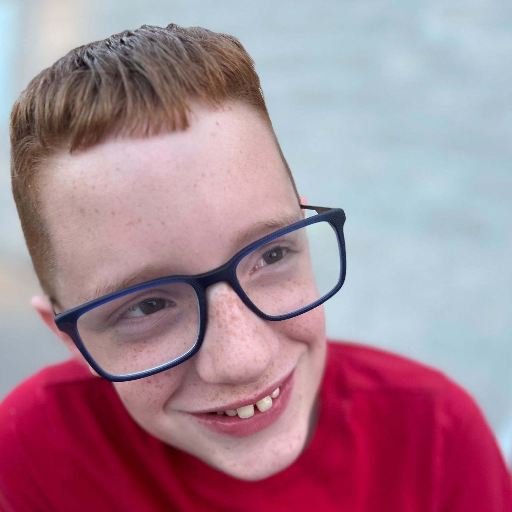
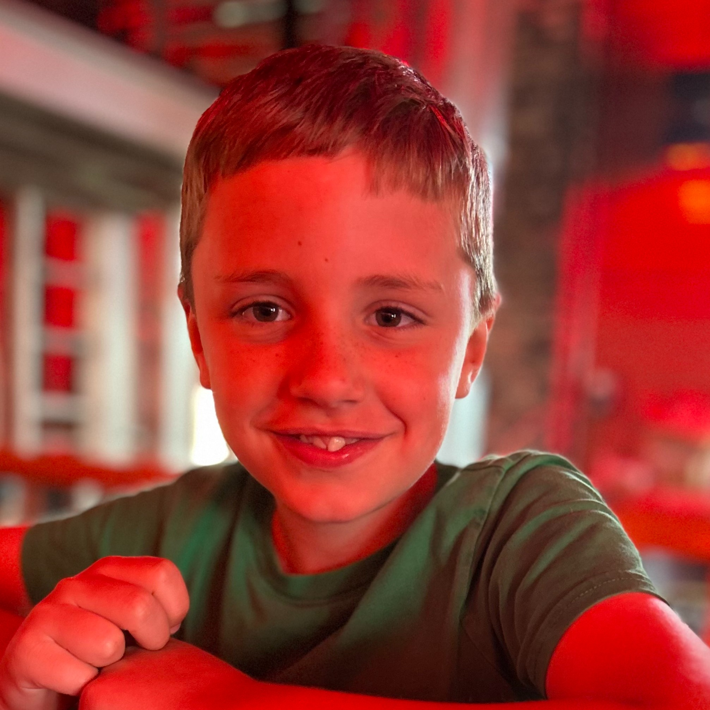
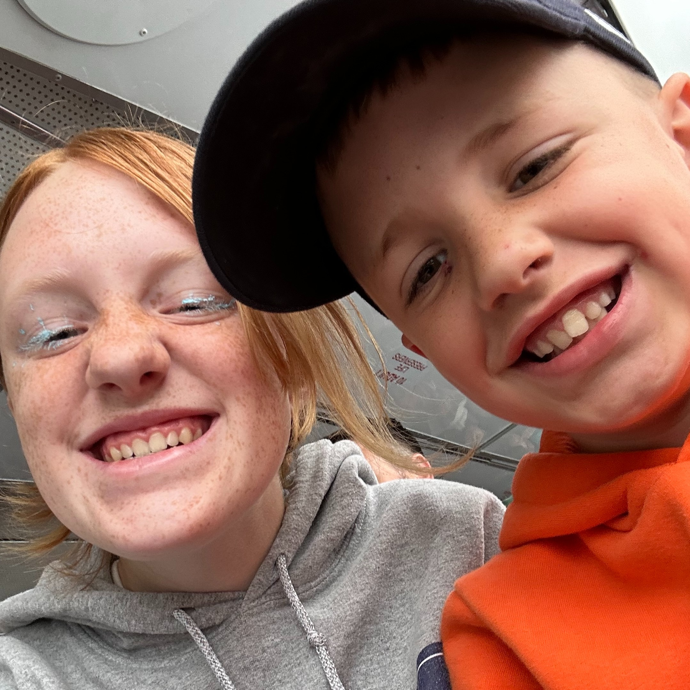
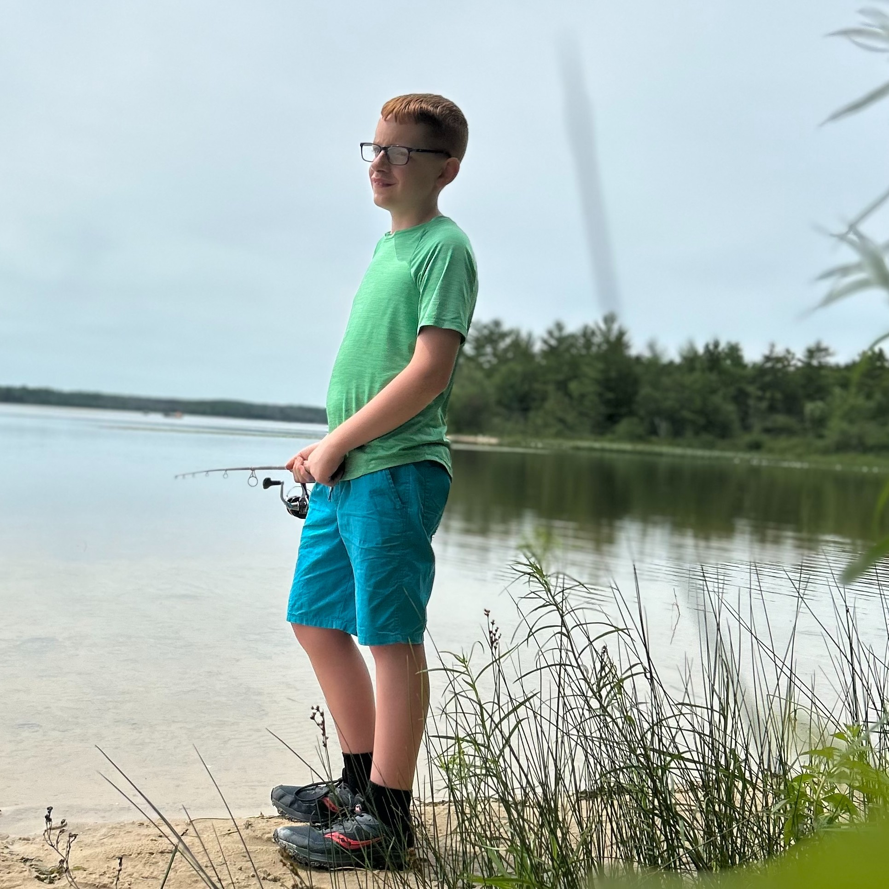

Going to the dentist


Our mission is to create a free, open-source platform for parents and caregivers of neurodivergent children to create personalized social stories. We believe that every child deserves access to resources that can help them navigate the world around them, and we are committed to providing a tool that empowers families to create their own social stories tailored to their child's unique needs and experiences.
Social stories are short, simple stories that are designed to help children understand and navigate social situations. They can be used to teach children about a wide range of topics, from basic social skills to more complex concepts like empathy and emotional regulation. Social stories can be especially helpful for neurodivergent children, who may struggle with social interactions and may benefit from visual aids and clear, concise explanations of social situations.
Our platform allows parents and caregivers to create personalized social stories for their children. Users can choose from a variety of templates and customize them with their child's name, pronouns, and other personal details. Once a story is created, it can be downloaded as a PDF and printed out for use at home or on the go.
Our founder, May Malinowski, is a sibling to two autistic children. She is also a high school student with a passion for coding and a desire to make a positive impact in the world, one webpage at a time. She has seen firsthand how hard (and expensive) it is to get the resources needed to help neurodivergent children live happier lives. She hopes that this platform can grow and provide more help to families in need.



